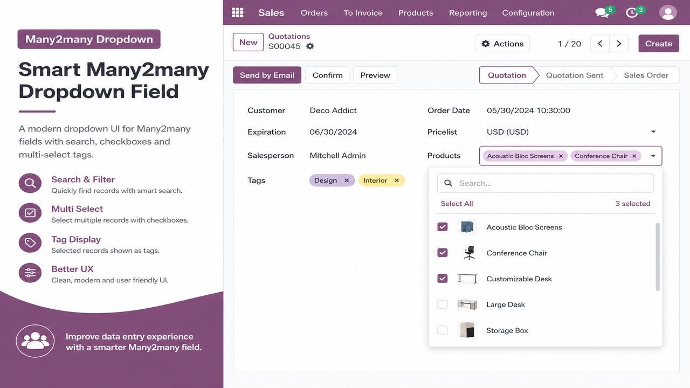

Select several records in one dropdown session using checkboxes.
Filter available records instantly from the dropdown search bar.
Selected records appear as native Odoo tags with remove support.
Add the widget to any many2many field in your XML view:
<field name="partner_ids"
widget="many2many_dropdown"
placeholder="Select partners..."/>
Install demo data to explore a ready-made example under Many2many Dropdown Demo in the main menu.
Developed by Anjli Kumari